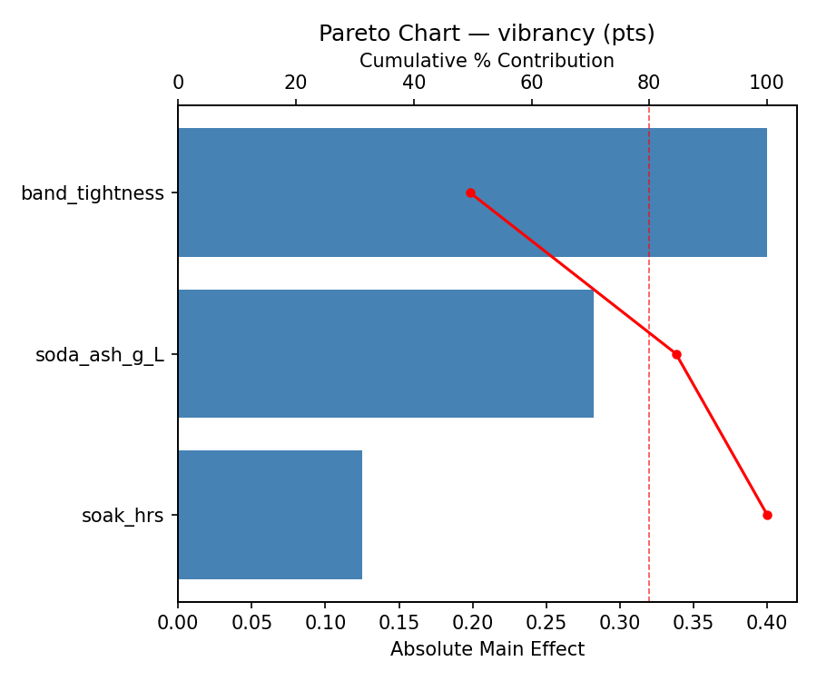
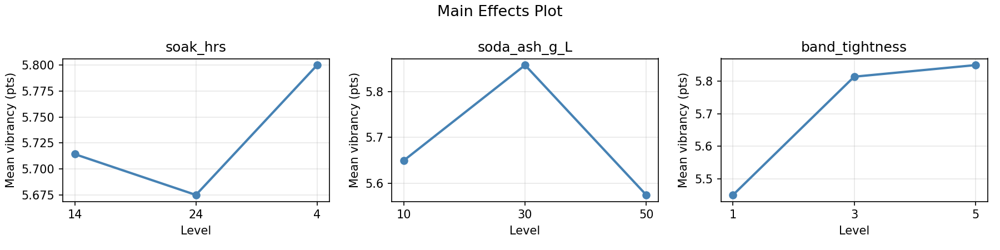
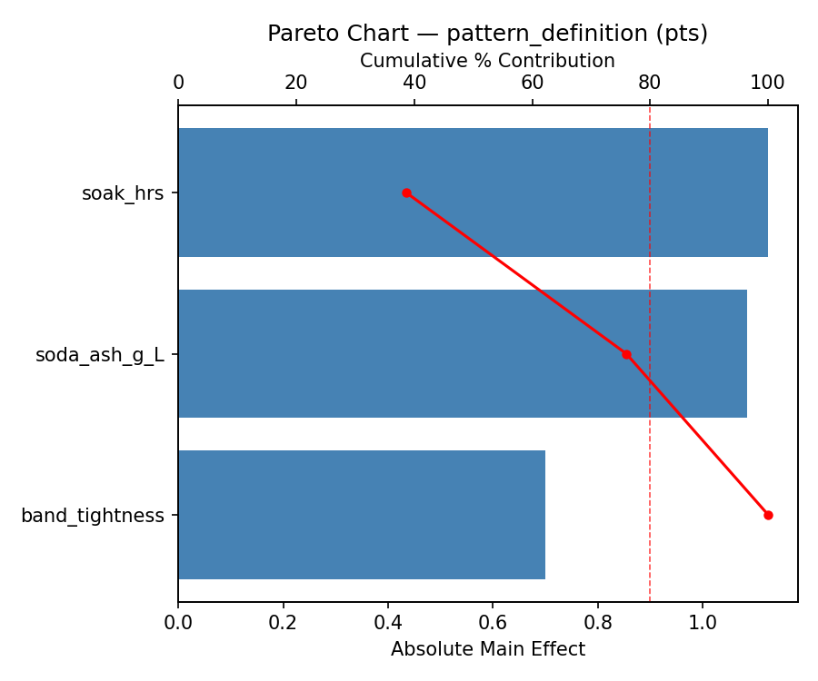
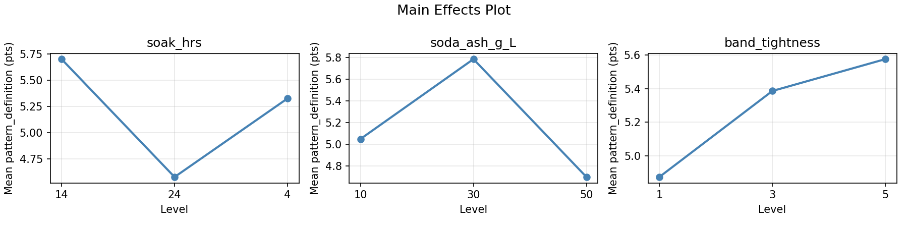
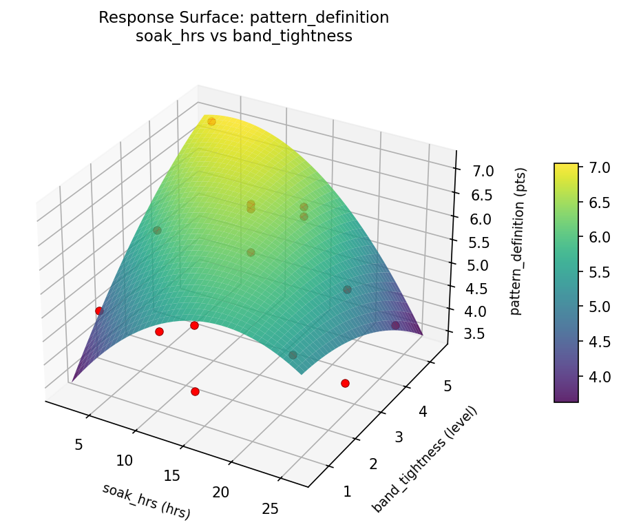
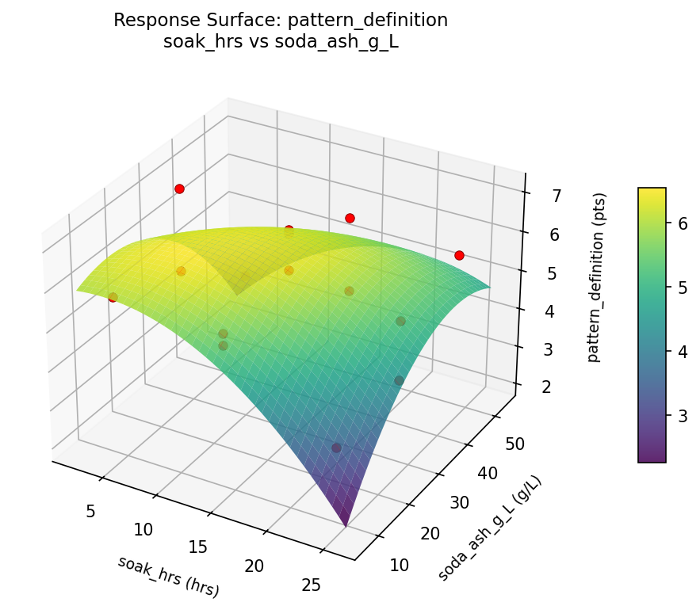
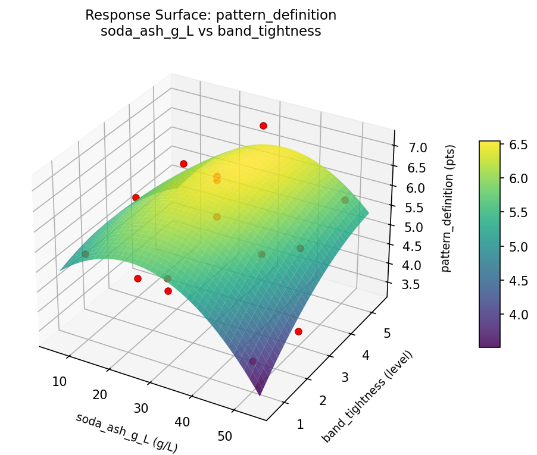
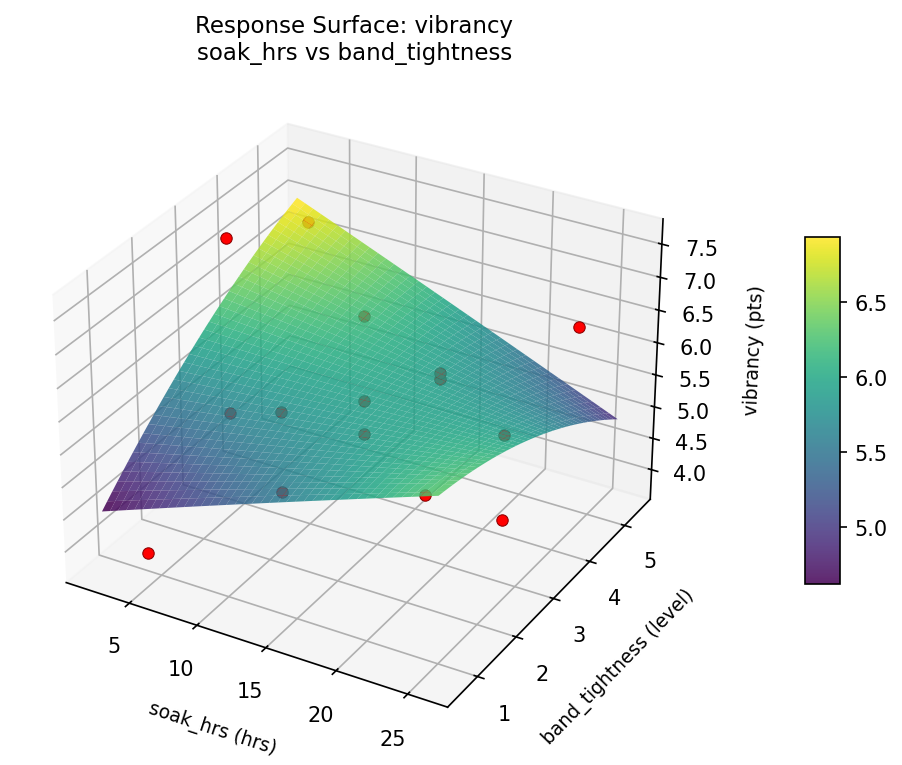
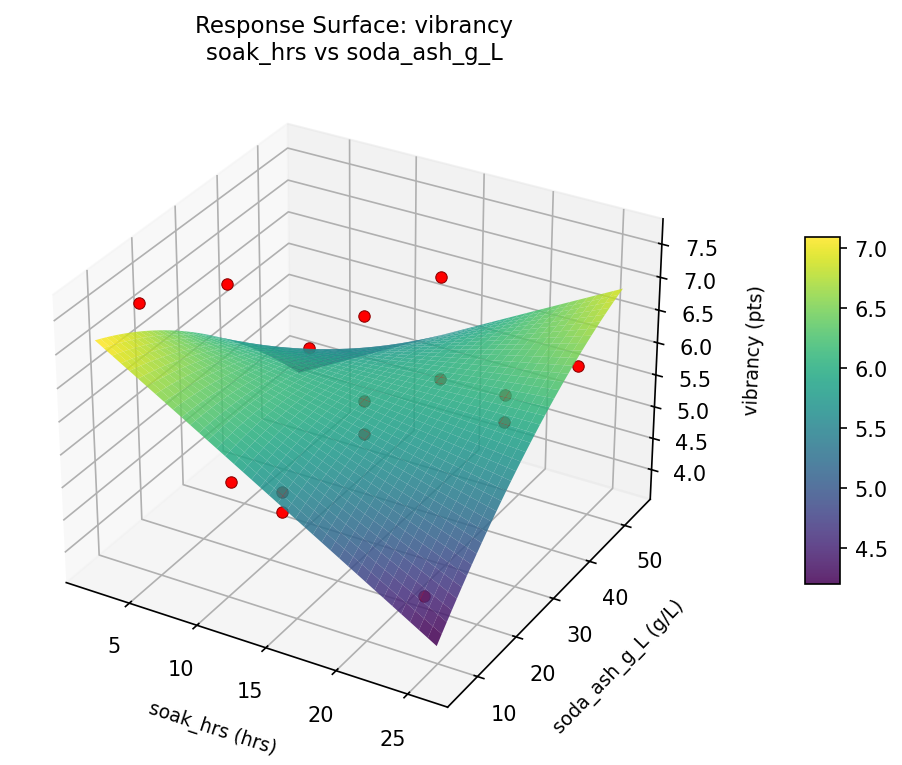
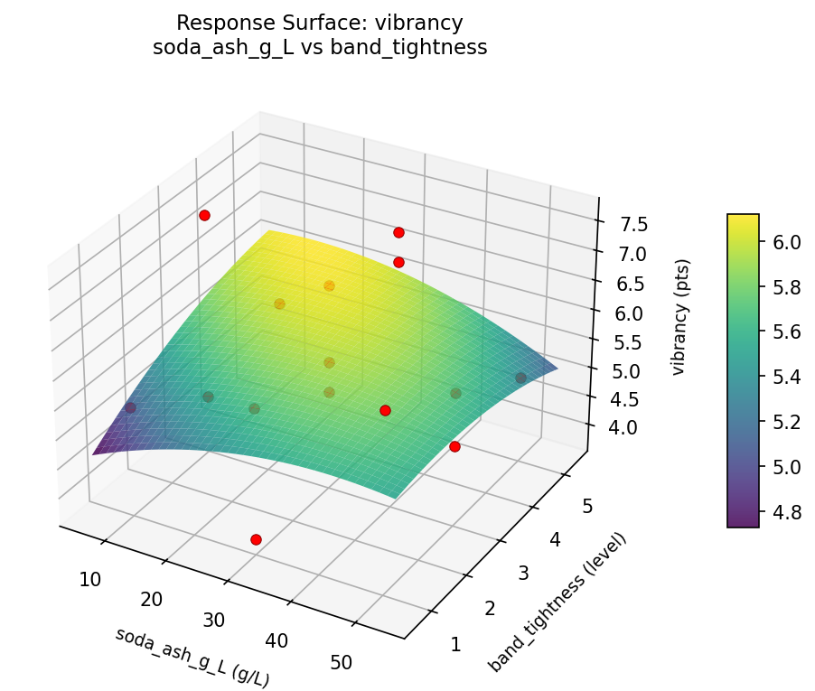

Summary
This experiment investigates tie-dye pattern control. Box-Behnken design to maximize color vibrancy and pattern definition by tuning dye soak time, soda ash concentration, and rubber band tightness.
The design varies 3 factors: soak hrs (hrs), ranging from 4 to 24, soda ash g L (g/L), ranging from 10 to 50, and band tightness (level), ranging from 1 to 5. The goal is to optimize 2 responses: vibrancy (pts) (maximize) and pattern definition (pts) (maximize). Fixed conditions held constant across all runs include fabric = 100pct_cotton, dye type = fiber_reactive.
A Box-Behnken design was chosen because it efficiently fits quadratic models with 3 continuous factors while avoiding extreme corner combinations — requiring only 15 runs instead of the 8 needed for a full factorial at two levels.
Quadratic response surface models were fitted to capture potential curvature and factor interactions. The RSM contour plots below visualize how pairs of factors jointly affect each response.
Key Findings
For vibrancy, the most influential factors were band tightness (49.6%), soda ash g L (35.0%), soak hrs (15.5%). The best observed value was 7.6 (at soak hrs = 24, soda ash g L = 50, band tightness = 3).
For pattern definition, the most influential factors were soak hrs (38.7%), soda ash g L (37.3%), band tightness (24.0%). The best observed value was 7.1 (at soak hrs = 24, soda ash g L = 30, band tightness = 1).
Recommended Next Steps
- Run confirmation experiments at the predicted optimal settings to validate the model.
- Consider whether any fixed factors should be varied in a future study.
Experimental Setup
Factors
| Factor | Low | High | Unit |
|---|
soak_hrs | 4 | 24 | hrs |
soda_ash_g_L | 10 | 50 | g/L |
band_tightness | 1 | 5 | level |
Fixed: fabric = 100pct_cotton, dye_type = fiber_reactive
Responses
| Response | Direction | Unit |
|---|
vibrancy | ↑ maximize | pts |
pattern_definition | ↑ maximize | pts |
Configuration
{
"metadata": {
"name": "Tie-Dye Pattern Control",
"description": "Box-Behnken design to maximize color vibrancy and pattern definition by tuning dye soak time, soda ash concentration, and rubber band tightness"
},
"factors": [
{
"name": "soak_hrs",
"levels": [
"4",
"24"
],
"type": "continuous",
"unit": "hrs"
},
{
"name": "soda_ash_g_L",
"levels": [
"10",
"50"
],
"type": "continuous",
"unit": "g/L"
},
{
"name": "band_tightness",
"levels": [
"1",
"5"
],
"type": "continuous",
"unit": "level"
}
],
"fixed_factors": {
"fabric": "100pct_cotton",
"dye_type": "fiber_reactive"
},
"responses": [
{
"name": "vibrancy",
"optimize": "maximize",
"unit": "pts"
},
{
"name": "pattern_definition",
"optimize": "maximize",
"unit": "pts"
}
],
"settings": {
"operation": "box_behnken",
"test_script": "use_cases/185_tie_dye_pattern/sim.sh"
}
}
Experimental Matrix
The Box-Behnken Design produces 15 runs. Each row is one experiment with specific factor settings.
| Run | soak_hrs | soda_ash_g_L | band_tightness |
|---|
| 1 | 14 | 10 | 1 |
| 2 | 14 | 30 | 3 |
| 3 | 24 | 30 | 5 |
| 4 | 24 | 30 | 1 |
| 5 | 14 | 30 | 3 |
| 6 | 14 | 30 | 3 |
| 7 | 4 | 30 | 5 |
| 8 | 24 | 10 | 3 |
| 9 | 14 | 10 | 5 |
| 10 | 24 | 50 | 3 |
| 11 | 4 | 30 | 1 |
| 12 | 14 | 50 | 5 |
| 13 | 4 | 10 | 3 |
| 14 | 4 | 50 | 3 |
| 15 | 14 | 50 | 1 |
Step-by-Step Workflow
1
Preview the design
$ python doe.py info --config use_cases/185_tie_dye_pattern/config.json
2
Generate the runner script
$ python doe.py generate --config use_cases/185_tie_dye_pattern/config.json \
--output use_cases/185_tie_dye_pattern/results/run.sh --seed 42
3
Execute the experiments
$ bash use_cases/185_tie_dye_pattern/results/run.sh
4
Analyze results
$ python doe.py analyze --config use_cases/185_tie_dye_pattern/config.json
5
Get optimization recommendations
$ python doe.py optimize --config use_cases/185_tie_dye_pattern/config.json
6
Generate the HTML report
$ python doe.py report --config use_cases/185_tie_dye_pattern/config.json \
--output use_cases/185_tie_dye_pattern/results/report.html
Features Exercised
| Feature | Value |
|---|
| Design type | box_behnken |
| Factor types | continuous (all 3) |
| Arg style | double-dash |
| Responses | 2 (vibrancy ↑, pattern_definition ↑) |
| Total runs | 15 |
Analysis Results
Generated from actual experiment runs using the DOE Helper Tool.
Response: vibrancy
Top factors: band_tightness (49.6%), soda_ash_g_L (35.0%), soak_hrs (15.5%).
Pareto Chart

Main Effects Plot

Response: pattern_definition
Top factors: soak_hrs (38.7%), soda_ash_g_L (37.3%), band_tightness (24.0%).
Pareto Chart

Main Effects Plot

Response Surface Plots
3D surfaces fitted with quadratic RSM. Red dots are observed data points.
pattern definition soak hrs vs band tightness

pattern definition soak hrs vs soda ash g L

pattern definition soda ash g L vs band tightness

vibrancy soak hrs vs band tightness

vibrancy soak hrs vs soda ash g L

vibrancy soda ash g L vs band tightness

Full Analysis Output
RSM surface: rsm_vibrancy_soak_hrs_vs_soda_ash_g_L.png
RSM surface: rsm_vibrancy_soak_hrs_vs_band_tightness.png
RSM surface: rsm_vibrancy_soda_ash_g_L_vs_band_tightness.png
RSM surface: rsm_pattern_definition_soak_hrs_vs_soda_ash_g_L.png
RSM surface: rsm_pattern_definition_soak_hrs_vs_band_tightness.png
RSM surface: rsm_pattern_definition_soda_ash_g_L_vs_band_tightness.png
=== Main Effects: vibrancy ===
Factor Effect Std Error % Contribution
--------------------------------------------------------------
band_tightness 0.4000 0.2673 49.6%
soda_ash_g_L 0.2821 0.2673 35.0%
soak_hrs 0.1250 0.2673 15.5%
=== Summary Statistics: vibrancy ===
soak_hrs:
Level N Mean Std Min Max
------------------------------------------------------------
14 7 5.7143 0.7841 5.0000 7.0000
24 4 5.6750 0.8221 4.5000 6.4000
4 4 5.8000 1.7569 3.8000 7.6000
soda_ash_g_L:
Level N Mean Std Min Max
------------------------------------------------------------
10 4 5.6500 1.3528 4.5000 7.6000
30 7 5.8571 1.1103 3.8000 7.0000
50 4 5.5750 0.7932 4.9000 6.6000
band_tightness:
Level N Mean Std Min Max
------------------------------------------------------------
1 4 5.4500 1.2042 3.8000 6.6000
3 7 5.8143 1.1216 4.5000 7.6000
5 4 5.8500 0.9469 5.0000 6.9000
=== Main Effects: pattern_definition ===
Factor Effect Std Error % Contribution
--------------------------------------------------------------
soak_hrs 1.1250 0.2986 38.7%
soda_ash_g_L 1.0857 0.2986 37.3%
band_tightness 0.7000 0.2986 24.0%
=== Summary Statistics: pattern_definition ===
soak_hrs:
Level N Mean Std Min Max
------------------------------------------------------------
14 7 5.7000 0.9695 3.9000 6.8000
24 4 4.5750 1.0210 3.6000 5.6000
4 4 5.3250 1.4975 3.5000 7.1000
soda_ash_g_L:
Level N Mean Std Min Max
------------------------------------------------------------
10 4 5.0500 0.9815 3.6000 5.7000
30 7 5.7857 1.1824 3.8000 7.1000
50 4 4.7000 1.1690 3.5000 5.8000
band_tightness:
Level N Mean Std Min Max
------------------------------------------------------------
1 4 4.8750 0.6652 3.9000 5.3000
3 7 5.3857 1.3409 3.5000 6.8000
5 4 5.5750 1.3574 3.8000 7.1000
Pareto chart (vibrancy): use_cases/185_tie_dye_pattern/results/analysis/pareto_vibrancy.png
Pareto chart (pattern_definition): use_cases/185_tie_dye_pattern/results/analysis/pareto_pattern_definition.png
Main effects (vibrancy): use_cases/185_tie_dye_pattern/results/analysis/main_effects_vibrancy.png
Main effects (pattern_definition): use_cases/185_tie_dye_pattern/results/analysis/main_effects_pattern_definition.png
Optimization Recommendations
=== Optimization: vibrancy ===
Direction: maximize
Best observed run: #10
soak_hrs = 24
soda_ash_g_L = 50
band_tightness = 3
Value: 7.6
RSM Model (linear, R² = 0.1328, Adj R² = -0.1038):
Coefficients:
intercept +5.7267
soak_hrs +0.4375
soda_ash_g_L -0.1875
band_tightness -0.1500
RSM Model (quadratic, R² = 0.3295, Adj R² = -0.8775):
Coefficients:
intercept +5.8333
soak_hrs +0.4375
soda_ash_g_L -0.1875
band_tightness -0.1500
soak_hrs*soda_ash_g_L +0.1000
soak_hrs*band_tightness -0.3750
soda_ash_g_L*band_tightness +0.0750
soak_hrs^2 +0.3583
soda_ash_g_L^2 +0.1083
band_tightness^2 -0.6667
Curvature analysis:
band_tightness coef=-0.6667 concave (has a maximum)
soak_hrs coef=+0.3583 convex (has a minimum)
soda_ash_g_L coef=+0.1083 convex (has a minimum)
Notable interactions:
soak_hrs*band_tightness coef=-0.3750 (antagonistic)
Predicted optimum (from linear model):
soak_hrs = 24
soda_ash_g_L = 10
band_tightness = 3
Predicted value: 6.3517
Model quality: Weak fit — consider adding center points or using a different design.
Factor importance:
1. soak_hrs (effect: 0.9, contribution: 41.7%)
2. band_tightness (effect: 0.9, contribution: 40.5%)
3. soda_ash_g_L (effect: 0.4, contribution: 17.9%)
=== Optimization: pattern_definition ===
Direction: maximize
Best observed run: #12
soak_hrs = 24
soda_ash_g_L = 30
band_tightness = 1
Value: 7.1
RSM Model (linear, R² = 0.3214, Adj R² = 0.1364):
Coefficients:
intercept +5.3000
soak_hrs -0.1250
soda_ash_g_L +0.1875
band_tightness -0.8375
RSM Model (quadratic, R² = 0.6857, Adj R² = 0.1199):
Coefficients:
intercept +5.8667
soak_hrs -0.1250
soda_ash_g_L +0.1875
band_tightness -0.8375
soak_hrs*soda_ash_g_L +0.8500
soak_hrs*band_tightness -0.3500
soda_ash_g_L*band_tightness +0.6750
soak_hrs^2 -0.3208
soda_ash_g_L^2 -0.1458
band_tightness^2 -0.5958
Curvature analysis:
band_tightness coef=-0.5958 concave (has a maximum)
soak_hrs coef=-0.3208 concave (has a maximum)
soda_ash_g_L coef=-0.1458 concave (has a maximum)
Notable interactions:
soak_hrs*soda_ash_g_L coef=+0.8500 (synergistic)
soda_ash_g_L*band_tightness coef=+0.6750 (synergistic)
soak_hrs*band_tightness coef=-0.3500 (antagonistic)
Predicted optimum (from linear model):
soak_hrs = 14
soda_ash_g_L = 50
band_tightness = 1
Predicted value: 6.3250
Model quality: Weak fit — consider adding center points or using a different design.
Factor importance:
1. band_tightness (effect: 1.7, contribution: 68.6%)
2. soak_hrs (effect: 0.4, contribution: 16.1%)
3. soda_ash_g_L (effect: 0.4, contribution: 15.4%)